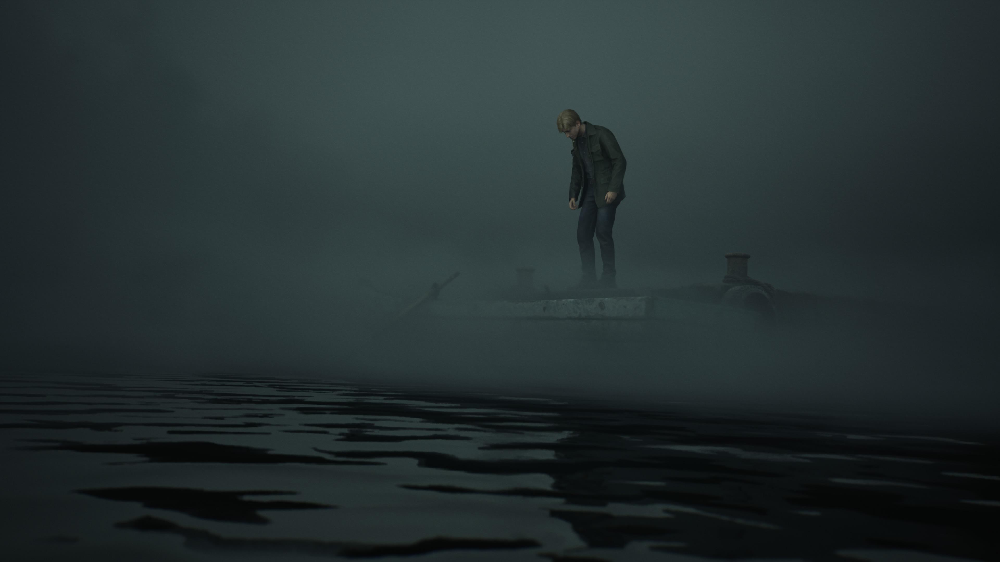
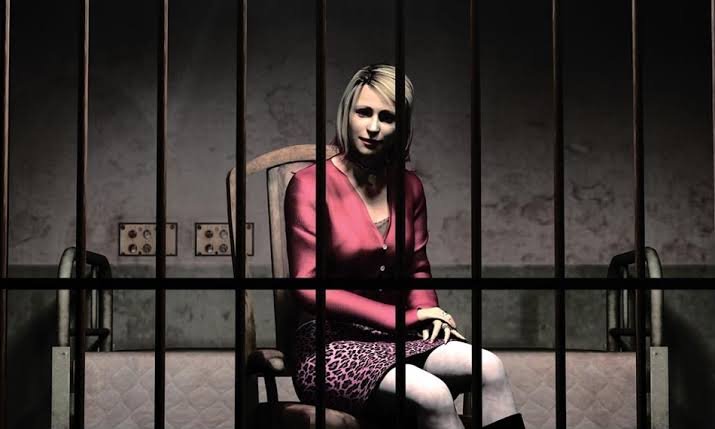
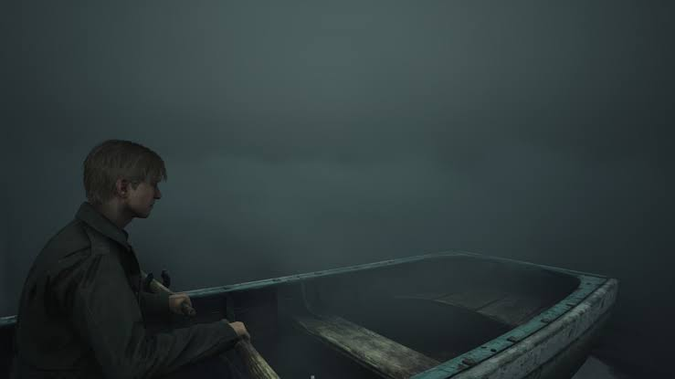
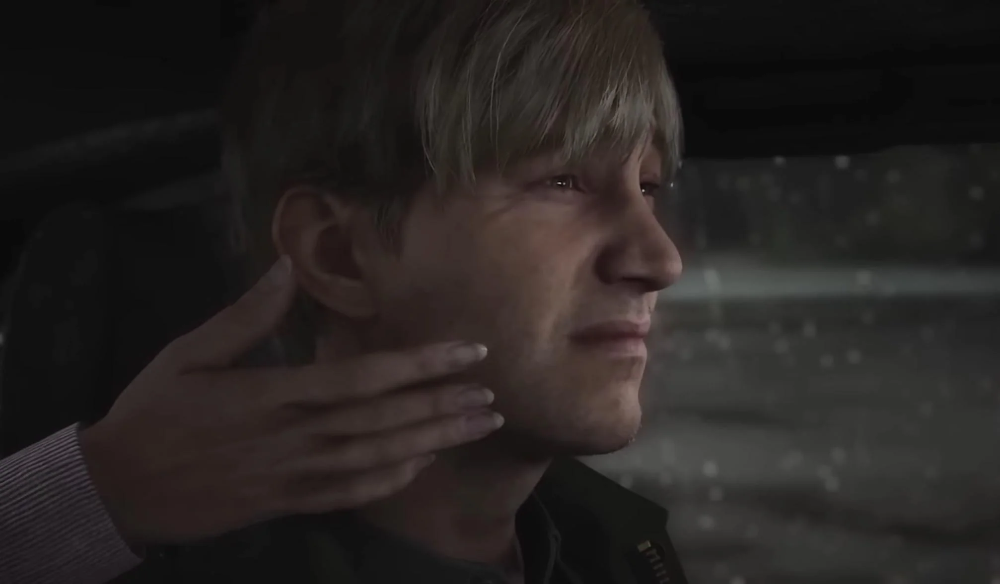
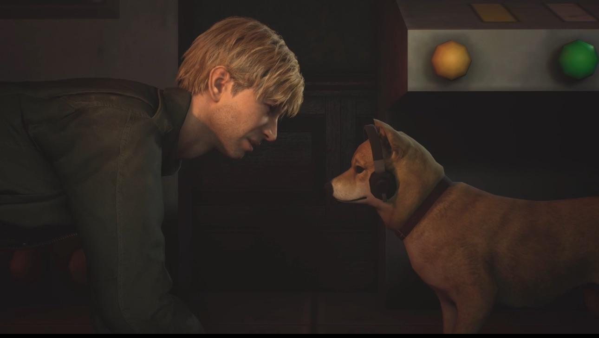

Leave
The Leave ending shows James beginning to accept the truth
about Mary and the things he has done. After confronting
his guilt, he is able to move forward instead of remaining
trapped by his past. The ending suggests that James may
finally leave Silent Hill and attempt to start a new life.
It represents acceptance, forgiveness, and the possibility
of moving on from painful experiences.

In Water
In the In Water ending, James is unable to overcome his
guilt and grief. He drives his car into Toluca Lake,
seemingly ending his life. His feelings about Mary and
his inability to forgive himself consume him. This ending
is one of the darkest conclusions in the game, exploring
themes of depression, guilt, loss, and self-destruction.

Maria
In the Maria ending, James leaves Silent Hill with Maria
instead of accepting the truth about Mary and his past.
At first, the ending appears to offer James a chance at
happiness. However, Maria begins coughing, reminding
players of Mary's illness. This suggests that James may
be repeating the same patterns and avoiding the guilt
he needs to confront. The ending leaves his future
uncertain.

Rebirth
In the Rebirth ending, James gathers mysterious ritual
objects throughout Silent Hill. He appears to believe
that an ancient ritual could bring Mary back to life.
The ending reveals how far he is willing to go because
he cannot accept her death. Its supernatural elements
create an unsettling conclusion, leaving players to
wonder whether James can truly escape his grief.

Stillness
Stillness is an additional ending introduced in
Silent Hill 2 Remake. It expands on the themes of the
In Water ending and focuses on James's overwhelming
grief and emotional suffering. The ending offers a
different perspective on his final moments and the
memories that continue to haunt him. It is a somber
conclusion that emphasizes how difficult it is for
James to live with what happened to Mary.

Bliss
Bliss is another additional ending in the remake.
James discovers a way to revisit memories connected
to Mary, giving him an opportunity to escape the
painful reality of what happened. Rather than
confronting his guilt directly, he appears drawn
toward a comforting version of the past. The ending
explores memory, denial, and the temptation to
retreat into an idealized version of happier times.

Dog
The Dog ending is a humorous secret ending in which
James discovers that a Shiba Inu named Mira has been
controlling the events of Silent Hill from a hidden
control room. The reveal completely changes the mood
of the story, turning the psychological horror into
a joke. It is a playful reward for players who
discover the requirements for this unusual ending.

UFO
The UFO ending is a bizarre, comedic secret ending
that embraces the stranger side of the Silent Hill
series. Instead of a serious psychological conclusion,
it introduces an extraterrestrial twist. These
unexpected events provide a humorous break from
the disturbing atmosphere of the main story and
reward players who enjoy finding the game's secrets.